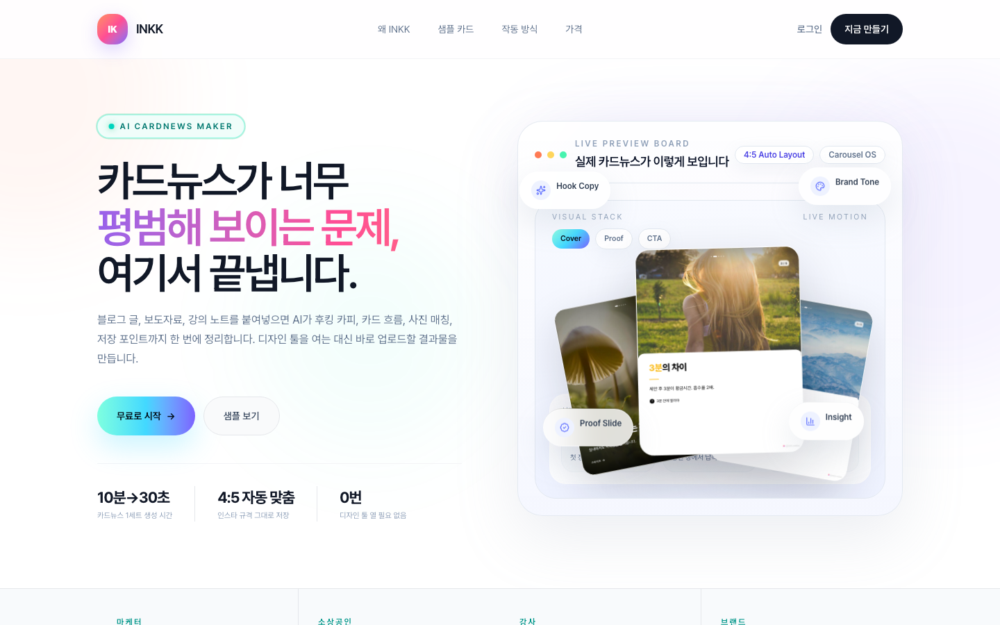

inkk.online
긴 글을 1분 만에 인스타그램 카드뉴스로.
AI가 5~10장 흐름으로 정리하고 어울리는 사진까지 매칭합니다.
기획부터 결제 시스템까지 — 혼자서, 7일.

1인 브랜드·소상공인에게 이 과정은 구성력 + 카피 + 이미지 + 디자인 툴 숙련도가 모두 필요하다. 결국 "콘텐츠를 만들 시간이 없어서 SNS를 포기하는" 사람이 대부분이다.
경쟁 상대는 캔바가 아니라 '오늘 콘텐츠를 그냥 안 올리는 선택'이다. 좁고 뾰족하게, 그 한 가지 병목만 제거한다.
"사이트가 느리다"는 피드백에 DB 마이그레이션을 바로 시작하려 했지만, 먼저 어디가 느린지 측정했다. 진짜 원인은 서버 리전이었고 — 설정 한 줄로 약 6배 개선. 측정 없는 최적화는 다음 달에 또 감으로 결정하게 만든다.
7일 안에 결제 시스템까지 혼자 완성했다는 것보다, 어떤 것을 왜 만들지 않기로 했는지가 더 중요한 결정이었다.